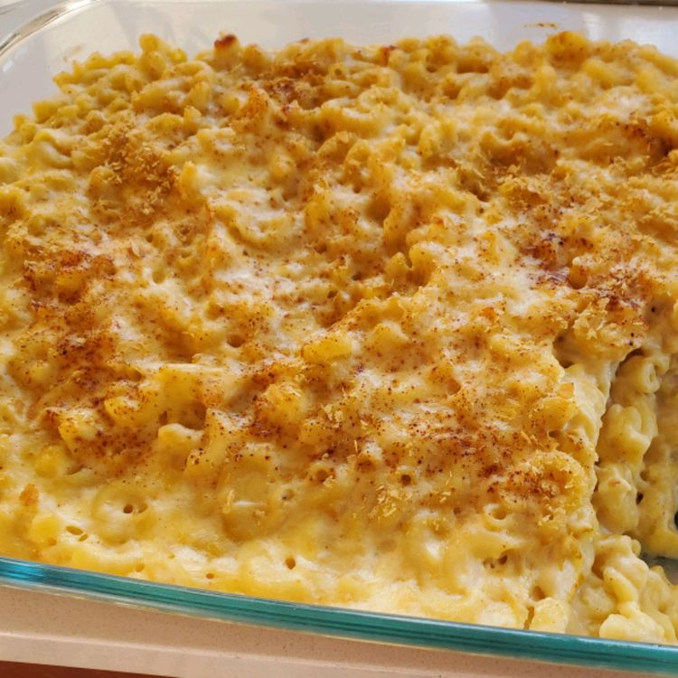

Mac and Cheese Recipe!

Ingredients
- Macaroni
- Butter
- Flour
- Milk
- Cheese
- Salt
- Pepper
- Paprika
- Bread Crumbs
- Boil the macaroni in salted water until the noodles are al dente.
Drain and transfer to a prepared baking dish.
- Melt butter, then whisk in the flour. Whisk in the milk, bring to a simmer, and stir in the cheeses. Season with salt and pepper and continue simmering until the sauce is thick.
Pour the sauce over the noodles and stir.
- Melt two tablespoons of butter in a skillet, add the bread crumbs, and toast until the crumbs are brown.
Spread the topping over the macaroni and cheese, then sprinkle with paprika.
- Bake in the preheated oven until the topping is golden brown.
- At 350 degrees F, this macaroni and cheese should be perfectly golden brown and gooey after about 30 minutes.
Return to Homepage